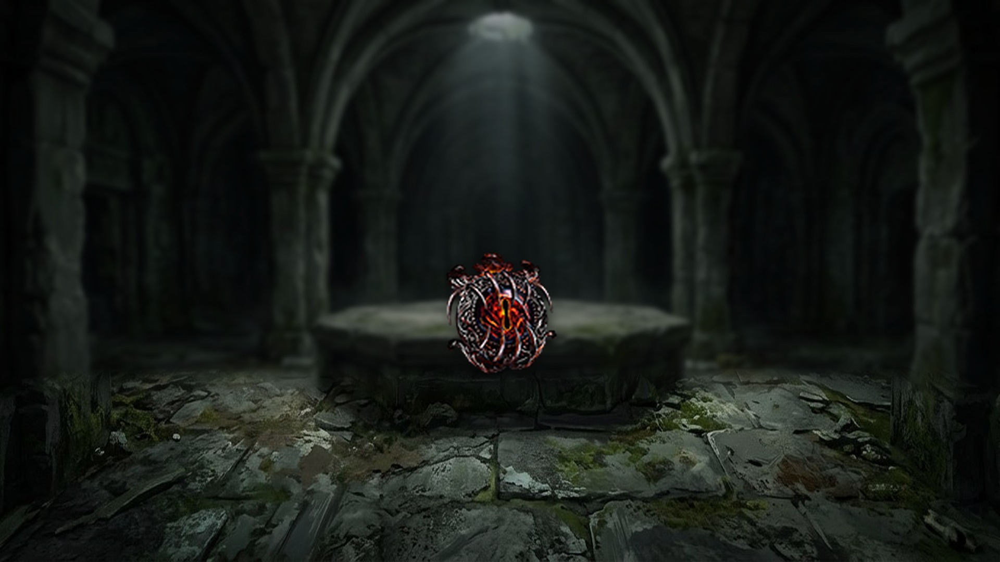

1920 × 1080 ↗The split you asked for: the stage is painted, the item never is. Each plate is an empty stone room — a plinth, a crypt, a vault, a cellar, with nothing standing on it — blurred behind, a sharp stone ledge cropped from that same room in front, and the real Path of Exile 1 item standing on the ledge at 2×–3× its own art.
The stage carries no object of its own — that is deliberate, so nothing competes with the real item and nothing in the picture is a second invention. Sizes are still capped by the source art: a jewel is 234 px at 3×, a flask 390 px at 2.5×, an orb 600 px at 2×. Click any plate for full size.